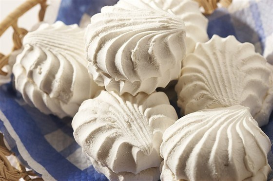

Зефир «Ванильный»
Рецепт очень популярный, приближен к рецепту по ГОСТ, но немного отличается. Зефир получается нежный, воздушный, в меру сладкий. Яблоки желательно использовать кислые или кисло-сладкие. Агар ничем заменить нельзя. Из указанного количества ингредиентов получается 80–100 штук.
Ингридиенты:

500 г яблок
300 г сахара
белок от 1 яйца
ванильная палочка (или 2 ч.л. ванильного сахара)
сироп:
400 г сахара
150 мл воды
10 г агар-агара
Приготовление
Яблоки почистить, удалить сердцевину, нарезать небольшими кусочками.
Яблоки положить в фольгу.
Завернуть.
Выложить в форму для запекания.
Поставить в духовку.
Запекать при температуре 180 градусов в течение 25–30 минут.
Остудить.
Яблоки измельчить в пюре (нам необходимо около 300 г пюре).
Комочков быть не должно (можно яблоки протереть через сито).
Агар замочить в воде.
Оставить на 30 минут.
Палочку ванили разрезать, вынуть семена.
В яблочное пюре добавить сахар, белок и семена ванили.
Хорошо взбить.
Агар довести до кипения.
Добавить сахар.
Довести до кипения.
Варить, при постоянном помешивании, в течение 5 минут.
В яблочное пюре с сахаром и белком добавить горячий сироп.
Хорошо взбить.
Масса должна получиться плотная, воздушная и должна хорошо держать форму.
С помощью кондитерского шприца выложить зефир на бумагу (разделочную доску, силиконовый коврик и т.д.)
Оставить при комнатной температуре на 3–4 часа.